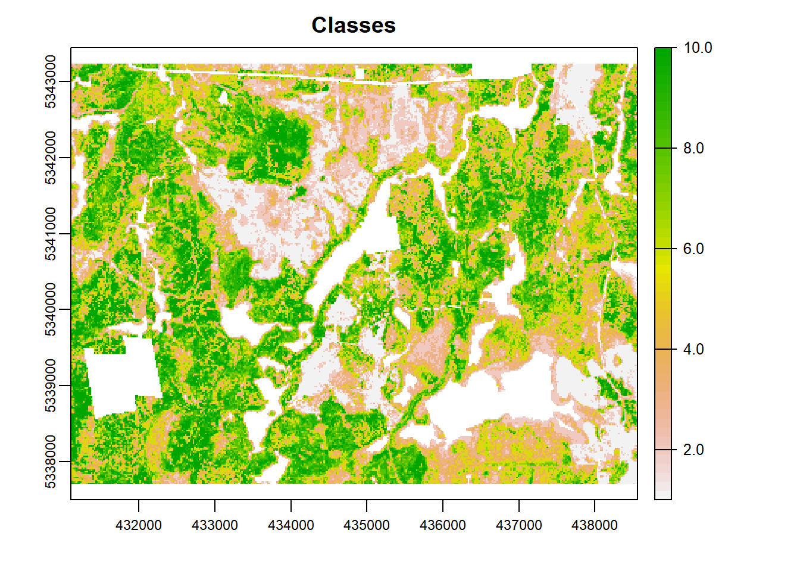
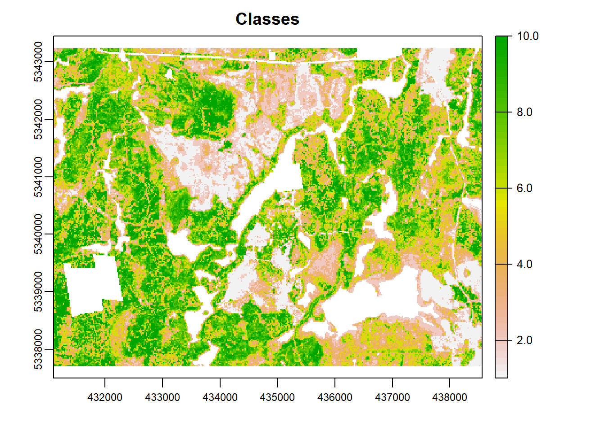

Stratification methods
The second method we outline is using k means stratification for consequent stratified sampling.
K-means
Here is a standard way to apply unsupervised K-means and allocate each ALS cell to a cluster.

How many clusters??
This is a loaded questions. How many clusters to choose can depends on many reasons, and there are many ways to determine how many to use. A challenge with the K-means method is being objective about the number of strata to use and where to partition the data. I present a number of examples below. (Papa et al. 2020) used k-means clustering and outlined that they used the Elbow method to determine the number of clusters.

Based on the figure above we see that we can choose 4 clusters based on the elbow method. Other methods also exist including the Silhoutte method.
 Based on the figure above the Silhouette method suggests we use 2 clusters. We see quickly that its not entirely cut and dry how to choose cluster numbers, but we have methods to decide that. This is likely something that the user will need to give input on.
Based on the figure above the Silhouette method suggests we use 2 clusters. We see quickly that its not entirely cut and dry how to choose cluster numbers, but we have methods to decide that. This is likely something that the user will need to give input on.
The NbClust() function from the (Charrad et al. 2015) package is an additional method, though it takes a long time to run (especially on large datasets). This function
provides 30 indices for determining the number of clusters and proposes to user the best clustering scheme from the different results obtained by varying all combinations of number of clusters, distance measures, and clustering methods.
Optimum stratum boundaries
A method to address this is using optimal break methods like that of strata.data() from the (Reddy and Khan 2019) package. This method takes the population of candidate cells v and a fixed sample size 100 to compute the optimum stratum boundaries (OSB) for a given number of strata. Along with OSB it also provides the optimum sample sizes within strata directly from the data.
In this example we specify that we would like data to be split into 4 strata and we iterate splits on the avg cov and p99 variables. Some studies like (Maltamo et al. 2011) and (Hawbaker et al. 2009) used multiple metrics to split on, while others like used only 1.
 ## Sampling within groups/strata {-}
## Sampling within groups/strata {-}
Once OSB are defined we can associate the groups with the data themselves and perform statistical tests to determine wherther groups are significantly difference from one another. (Papa et al. 2020) used ANOVA and Tukey post-hoc tests. First, we can change the resulting group labels from cut() to more understandable characters.
## Df Sum Sq Mean Sq F value Pr(>F)
## groups 3 532594 177531 117528 <2e-16 ***
## Residuals 29898 45162 2
## ---
## Signif. codes: 0 '***' 0.001 '**' 0.01 '*' 0.05 '.' 0.1 ' ' 1
Once these strata are established we can begin to test a variety of sampling mechanisms.
Simple Random Sampling
## # A tibble: 4 x 4
## groups n mean sd
## <chr> <int> <dbl> <dbl>
## 1 A 61 3.31 1.07
## 2 B 50 7.42 1.12
## 3 C 69 11.8 1.42
## 4 D 18 15.5 0.925## # A tibble: 4 x 4
## groups n mean sd
## <chr> <int> <dbl> <dbl>
## 1 A 9126 3.15 0.992
## 2 B 7590 7.29 1.23
## 3 C 10404 11.9 1.41
## 4 D 2782 15.7 1.21Visualizing the samples


Using 2 variables to stratify


Balanced Sampling
(Grafström and Ringvall 2013) described the (Grafström and Lisic 2019) package, which implements a number of sampling methods that balance samples spatially and within auxilary variable space. The spatial balance is important given that we
 



## # A tibble: 3 x 4
## alg n mean sd
## <chr> <int> <dbl> <dbl>
## 1 lcube 200 8.26 4.32
## 2 lmp1 200 8.26 4.51
## 3 lmp2 200 8.22 4.50## # A tibble: 1 x 3
## n mean sd
## <int> <dbl> <dbl>
## 1 29902 8.40 4.40Latin Hypercube Sampling
There are a number of different approaches to take with Latin Hypercube Sampling. The following code was derived from (Malone, Minansy, and Brungard 2019), who present a method to boostrap sample number for hypercube sampling, followed by a few testing options to determine optimal sample numbers. This code was provided by the authors at https://bitbucket.org/brendo1001/clhc_sampling/downloads/ which i have manipulated to work with our dataset.
After the loop has finished we are able to plot the ouputs of the bootstrapping to outline how the sample size influenced the deviation of population and sample statistics.


After determining the disparity between samples and population we can optimize the number of samples we use based on the cumulative frequency distribution. We determined that the optimum number of samples was 119.

##
|
| | 0%
|
|======== | 11%
|
|================ | 22%
|
|======================== | 33%
|
|================================ | 44%
|
|======================================= | 56%
|
|=============================================== | 67%
|
|======================================================= | 78%
|
|=============================================================== | 89%
|
|=======================================================================| 100%
This may look well and good.. But its important to look at WHERE the samples are being located to see if the algorithm was effective. See the image below showing that that we likely need to introduce a spatial aspect to the sampling. Not really sure how to do this just yet…
References
Charrad, Malika, Nadia Ghazzali, Veronique Boiteau, and Azam Niknafs. 2015. NbClust: Determining the Best Number of Clusters in a Data Set. https://sites.google.com/site/malikacharrad/research/nbclust-package.
Grafström, Anton, and Jonathan Lisic. 2019. BalancedSampling: Balanced and Spatially Balanced Sampling. http://www.antongrafstrom.se/balancedsampling.
Grafström, Anton, and Anna Hedström Ringvall. 2013. “Improving forest field inventories by using remote sensing data in novel sampling designs.” Canadian Journal of Forest Research 43 (11): 1015–22. https://doi.org/10.1139/cjfr-2013-0123.
Hawbaker, Todd J., Nicholas S. Keuler, Adrian A. Lesak, Terje Gobakken, Kirk Contrucci, and Volker C. Radeloff. 2009. “Improved estimates of forest vegetation structure and biomass with a LiDAR-optimized sampling design.” Journal of Geophysical Research: Biogeosciences 114 (3): 1–11. https://doi.org/10.1029/2008JG000870.
Malone, Brendan P, Budiman Minansy, and Colby Brungard. 2019. “Some methods to improve the utility of conditioned Latin hypercube sampling,” 1–17. https://doi.org/10.7717/peerj.6451.
Maltamo, M., O. M. Bollandsås, E. Næsset, T. Gobakken, and P. Packalén. 2011. “Different plot selection strategies for field training data in ALS-assisted forest inventory.” Forestry 84 (1): 23–31. https://doi.org/10.1093/forestry/cpq039.
Papa, Daniel de Almeida, Danilo Roberti Alves de Almeida, Carlos Alberto Silva, Evandro Orfanó Figueiredo, Scott C. Stark, Ruben Valbuena, Luiz Carlos Estraviz Rodriguez, and Marcus Vinício Neves d’Oliveira. 2020. “Evaluating tropical forest classification and field sampling stratification from lidar to reduce effort and enable landscape monitoring.” Forest Ecology and Management 457 (September 2019). https://doi.org/10.1016/j.foreco.2019.117634.
Reddy, Karuna G., and M. G. M. Khan. 2019. StratifyR: Optimal Stratification of Univariate Populations. https://CRAN.R-project.org/package=stratifyR.